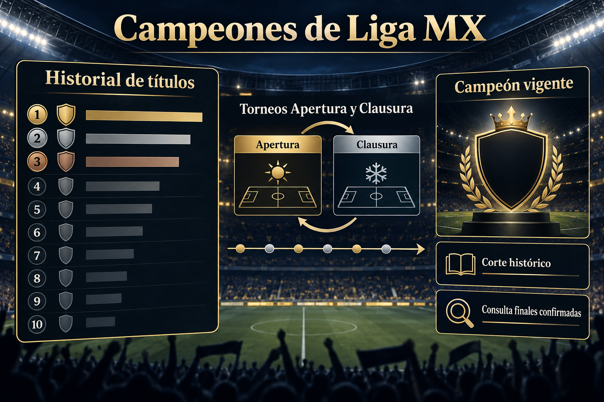

¿Quién es el máximo campeón de Liga MX?
América encabeza el historial con 16 campeonatos. Guadalajara y Toluca tienen 12 cada uno, mientras Cruz Azul alcanzó 10 al conquistar el Clausura 2026.
Último campeón de Liga MX
Cruz Azul ganó el Clausura 2026 y consiguió su décimo título. El Apertura 2026 se encuentra en disputa, por lo que esa edición todavía no tiene campeón.
Consulta los últimos 20 torneos →
Cómo contamos los títulos de liga
Este recuento incluye campeonatos de primera división y separa el trofeo de liga de la Copa MX, la Concacaf Champions Cup y el Campeón de Campeones. Por eso dos tablas de “títulos totales” pueden dar cifras distintas aunque coincidan en campeonatos de liga. Esta guía mantiene el criterio de campeonatos de primera división para que la comparación sea consistente.
Un torneo Apertura y un torneo Clausura entregan títulos distintos. Para revisar la secuencia reciente ve a los últimos 20 campeones; para comparar clubes más allá de una sola cifra, consulta cómo evaluar al mejor equipo. El Apertura 2026 se añadirá sólo cuando haya una final confirmada.
Historial, campeón vigente y torneos cortos
El historial reúne campeonatos de liga acumulados; el campeón vigente corresponde al ganador de la edición más reciente confirmada. En el formato de torneos cortos, Apertura y Clausura entregan títulos de liga distintos, por lo que cada final se registra por separado.
La posición de un club durante la fase regular no equivale a un título. Para seguir el torneo Apertura en curso, consulta la tabla general, los resultados confirmados y el formato de la Liguilla.
Quién es el campeón de la Liga MX
El campeón vigente se actualiza sólo tras una final confirmada; esta guía separa el título actual del palmarés histórico.
Equipos con más títulos de Liga MX
El listado histórico de campeones permite comparar títulos, pero no determina al campeón actual. Revisa la tabla general y las reglas de liguilla para el torneo vigente.